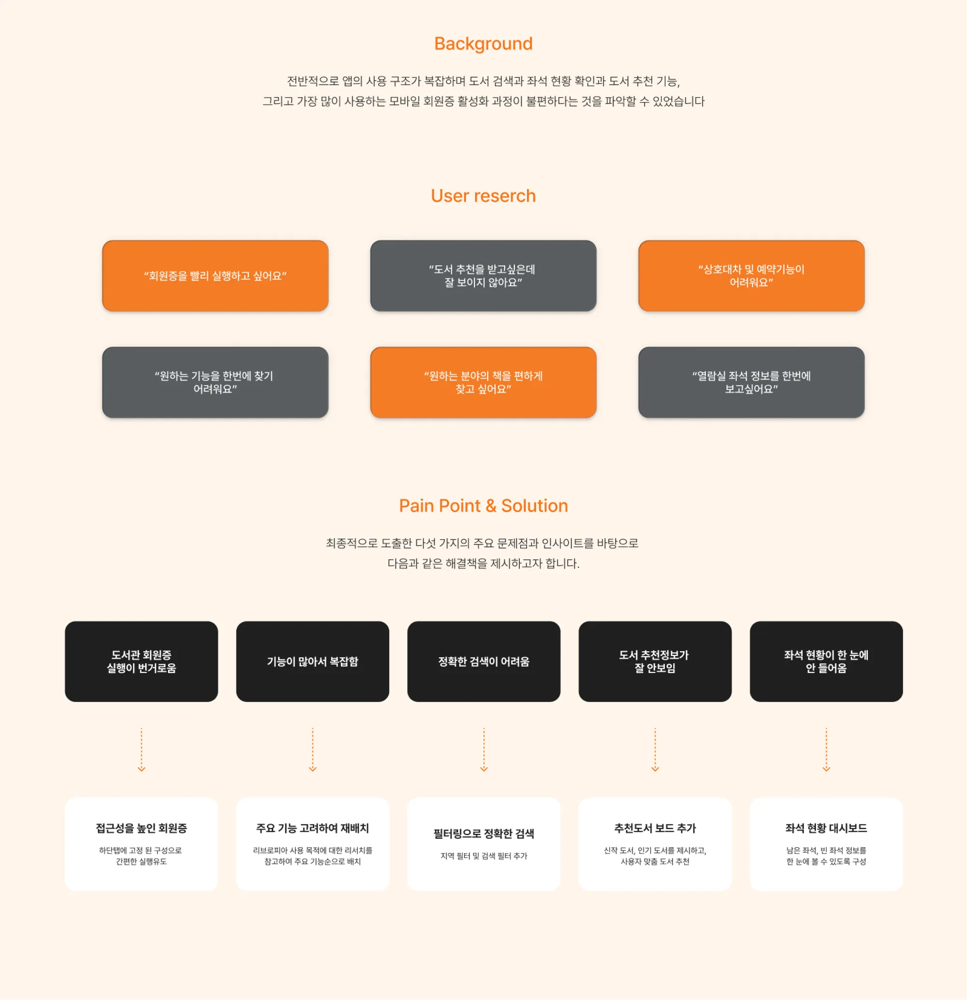
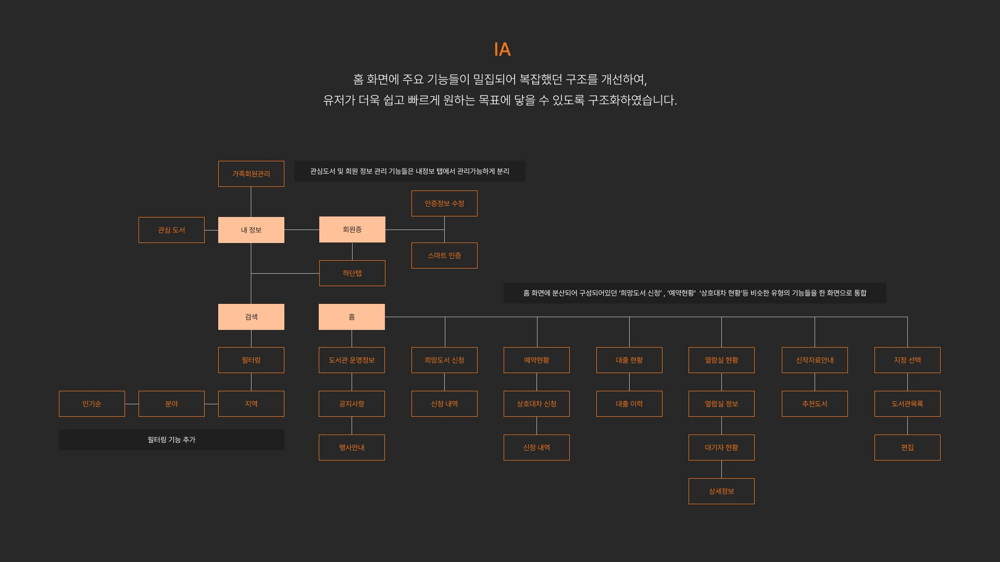

2025.04 — 2025.05
Libropia
공공도서관 앱 리브로피아 리디자인

- TYPE
- 개인 프로젝트
- PERIOD
- 2025.04.28 — 2025.05.10 (약 2주)
- ROLE
- 기획 · 리서치 · UI/UX 디자인 100%
- SCOPE
- 모바일 앱 주요 화면 리디자인
- TOOLS
- Figma · Illustrator
- KEYWORD
- 정확성 · 누구나 · 친근성
SUMMARY
복잡한 도서관 앱을
누구나 쓰기 쉽게
리브로피아는 전국 공공도서관 정보를 제공하는 서비스입니다. 다양한 연령층이 사용하지만 기능이 많아 구조가 복잡하고, 가장 많이 쓰는 모바일 회원증을 꺼내는 과정도 불편했습니다. 사용자 리서치로 문제를 찾고, 정보 구조를 다시 짜서 누구나 쉽게 쓸 수 있는 앱으로 재설계했습니다.
KEY POINTS
리서치에서 찾은 문제, 화면으로 해결
01
회원증 바로 실행
가장 자주 쓰는 모바일 회원증을 하단 탭에 고정해 어느 화면에서든 바로 열 수 있게 했습니다.
02
주요 기능 재배치
이용 목적 리서치를 바탕으로 대출 · 예약 · 열람실 등 자주 쓰는 기능을 홈 상단에 모았습니다.
03
필터링으로 정확한 검색
도서관 · 분야 · 인기순 필터를 추가하고, 검색 결과가 없을 땐 희망도서 신청으로 이어지게 했습니다.
04
열람실 대시보드
남은 좌석과 좌석 배치를 한눈에 보여주고, 빈 좌석 알림을 신청할 수 있게 했습니다.
RESEARCH
사용자 리서치와 문제 정의
기존 앱 화면을 분석하고 사용자 의견을 모아 다섯 가지 문제점과 해결 방향을 정리했습니다.

IA
정보 구조 재설계
홈에 흩어져 있던 기능을 정리해 원하는 목표에 더 빨리 닿도록 구조화했습니다.

SCREENS
주요 화면


RESULT
정리
리서치로 찾은 다섯 가지 문제를 각각 화면 단위의 해결책으로 연결했습니다. 기능을 더하기보다 자주 쓰는 기능을 찾기 쉽게 배치하는 데 집중해, 처음 쓰는 사용자도 헤매지 않는 구조를 목표로 했습니다.